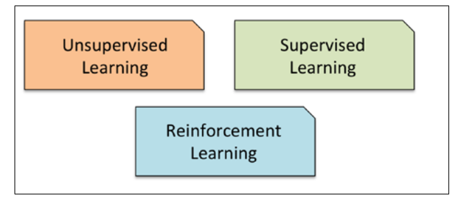
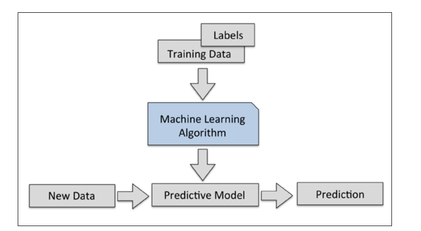
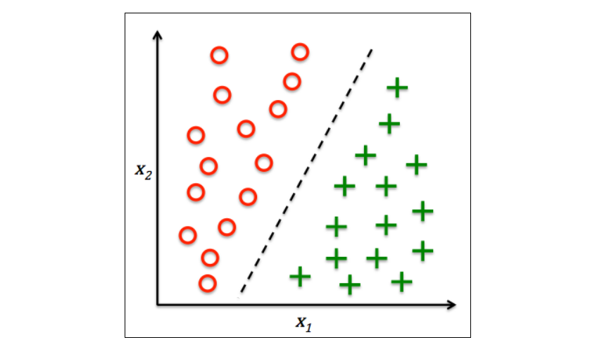
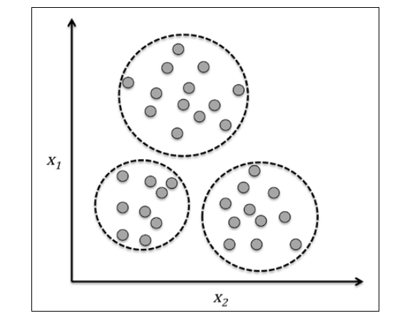
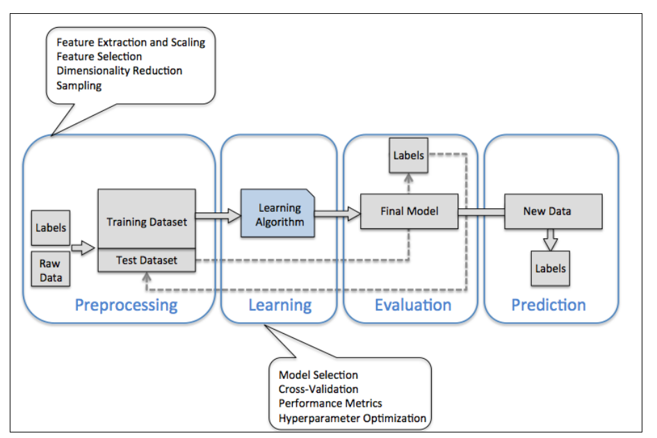

Introduction
Types of ML
{kind=link}
Supervised Learning
Here, the term supervised refers to a set of samples where the desired output signals (labels) are already known.
For example email with spam or non-spam labels and predicting the class of new email is a sample of classification
Another subcategory of supervised learning is regression, where the outcome signal is a continuous value
{kind=link}
A sample two-dimensional data binary classification
{kind=link}
Regression (continuous outcomes)
In regression analysis, we are given a number of predictor (explanatory) variables and a continuous response variable (outcome), and we try to find a relationship between those variables that allows us to predict an outcome.

Reinforcement learning
Unsupervised learning
Simple 2D clustering example based on the similarity of their features x1 and x2
{kind=link}
Dimensionality reduction
\(x^{(i)}_j\) we will use the superscript (i) to refer to the ith training sample, and the subscript j to refer to the jth dimension of the training dataset.
ML Roadmap
Here
{kind=link}
Preprocessing – getting data into shape
preprocessing ; transforming the features in the range [0,1] or normal distribution
for coorelated and redundant data –> dimensionality reduction techniques
Training and selecting a predictive model
One legitimate question to ask is: how do we know which model performs well on the final test data-set and real-world data if we don’t use this test set for the model selection but keep it for the final model evaluation?
inally, we also cannot expect that the default parameters of the different learning algorithms provided by software libraries are optimal for our specific problem task. hyperparameter optimization techniques
Evaluating models and predicting unseen data instances